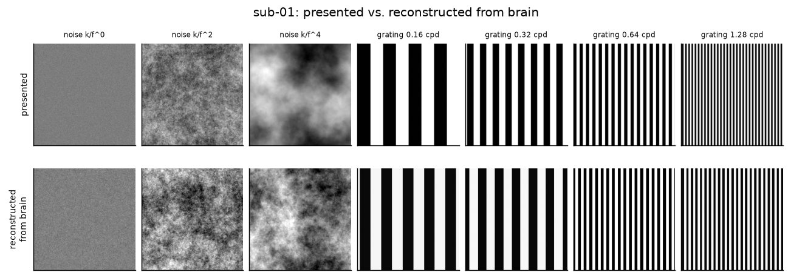
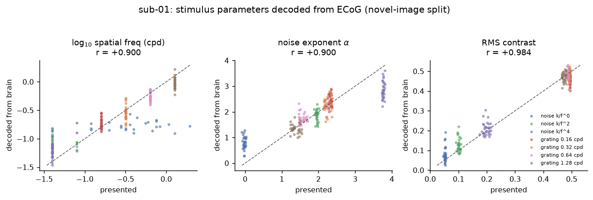

Reconstructions
Redrawing the picture from the brain signal
There is no photograph to rebuild here, so "reconstruct" has to mean something honest. The decoder reads a handful of numbers off the signal, and the picture is redrawn from those numbers and nothing else. Every pixel below traces back to something the model said.
01 · Side by side
One of each kind
Top row is what was on the screen. Bottom row is drawn from numbers read off the brain, on trials the model had never seen.

02 · Continuous decoding
Brain TV
No trial timing is used in this video. The decoder gets handed half a second of raw voltage every fifty milliseconds and has to say what is on the screen. The model was fitted on the first half of the run, and everything you see comes from the second half, so none of it was in training.
Left is the real screen. Middle is the reconstruction. Right is how sure the model is about each of the seven kinds. The trace underneath is broadband gamma from the ten contacts that reacted most, with grey bands marking when a picture was actually up. There is no sound.
Watch the trace and the bars together. The gamma lifts a moment after each grey band starts, and the bars swing to the right answer just behind it. When the screen goes blank the model has nothing to go on and the bars scatter, which is the correct thing for it to do.
03 · What is being read off
Numbers, not pixels
Rather than trying to guess a whole image, the model predicts a few properties and the picture is rebuilt from them. Each dot below is one trial the model had not seen.

04 · Being straight about it
Why this is not general image reconstruction
Work that rebuilds photographs from brain scans usually has thousands of trials and a generative model that already knows what photographs look like. There are 210 trials here and the pictures are stripes and grainy textures. A generative model would fill in detail it invented, and that detail would look convincing while meaning nothing.
So the drawing is made by a renderer that can only produce stripes or textures, driven by numbers the model actually predicted. It cannot draw a face, and it will not pretend to. The honest description is that it recovers the properties of what was seen, not the image, and it recovers some properties far better than others.